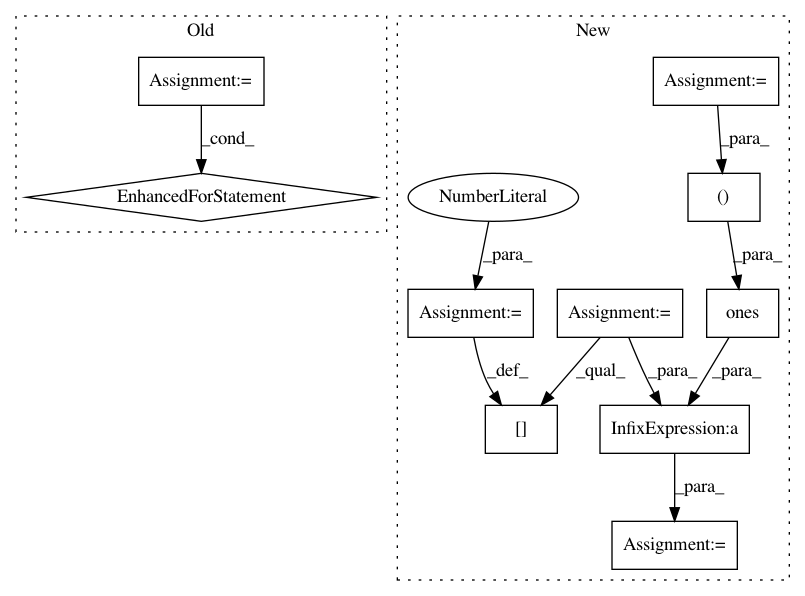

38b1a68f9f74ebb1a0f8cf2f73a9e606f7c022c2,nilearn/decoding/tests/test_same_api.py,,test_smoothlasso_and_tv_same_for_pure_l1_another_test,#Any#,167
Before Change
l1_ratio = 1.
max_iter = 20
for standardize in [True, False]:
sl = BaseSpaceNet(alphas=alpha, l1_ratios=l1_ratio,
penalty="smooth-lasso", max_iter=max_iter,
mask=mask, is_classif=False,
standardize=standardize, verbose=0).fit(X, y)
tvl1 = BaseSpaceNet(alphas=alpha, l1_ratios=l1_ratio, penalty="tv-l1",
max_iter=max_iter, mask=mask, is_classif=False,
standardize=standardize, verbose=0).fit(X, y)
// should be exactly the same (except for numerical errors)
np.testing.assert_array_almost_equal(sl.coef_, tvl1.coef_, decimal=decimal)
def test_coef_shape():
After Change
//////////////////////////////////////////////////////////////////////////////////////////////////////////////////////////////
dim = (16, 16)
W_init = np.zeros(dim)
W_init[2:6, 3:7] = 1
np.random.seed(0)
n = 10
p = dim[0] * dim[1]
X = np.ones((n, 1)) + W_init.ravel().T
X += np.random.randn(n, p)
y = np.dot(X, W_init.ravel())
mask = np.ones(X.shape[1]).astype(np.bool).reshape(dim)
alpha = .1
l1_ratio = 1.
max_iter = 20
In pattern: SUPERPATTERN
Frequency: 3
Non-data size: 10
Instances
Project Name: nilearn/nilearn
Commit Name: 38b1a68f9f74ebb1a0f8cf2f73a9e606f7c022c2
Time: 2015-07-28
Author: elvis.dohmatob@inria.fr
File Name: nilearn/decoding/tests/test_same_api.py
Class Name:
Method Name: test_smoothlasso_and_tv_same_for_pure_l1_another_test
Project Name: EpistasisLab/tpot
Commit Name: 2ab8c1444facbd46df8767a5badda5b9f1a50c29
Time: 2016-08-01
Author: supacoofoo@gmail.com
File Name: tests.py
Class Name:
Method Name:
Project Name: EpistasisLab/tpot
Commit Name: 2ab8c1444facbd46df8767a5badda5b9f1a50c29
Time: 2016-08-01
Author: supacoofoo@gmail.com
File Name: tpot/tpot.py
Class Name: TPOT
Method Name: predict